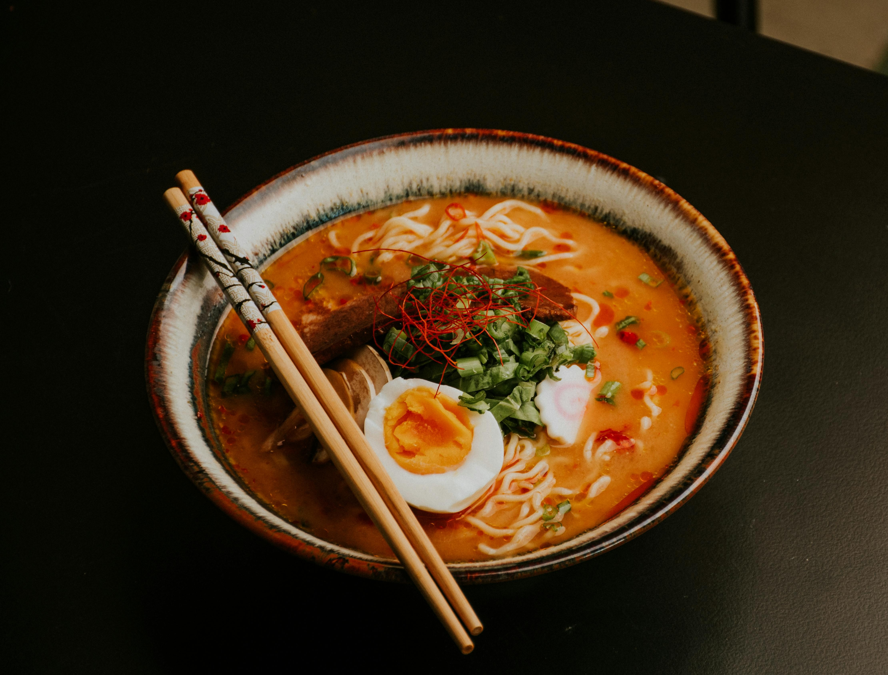

Food Adventures
Learn About the Foods You Love


Western food originated in Europe, shaped by centuries of cultural exchange, colonization, and evolving traditions. It spread globally through exploration and trade, influencing and adapting to local tastes. Here, you can explore the rich history of Western cuisine and delves into some of its most iconic and beloved dishes in detail.

Explore Western
Eastern food has deep roots in Asia, shaped by ancient traditions, philosophies, and regional diversity. Influenced by countries like China, Japan, India, and Thailand, it reflects centuries of culture and history. Here, you can explore the Eastern cuisine's origins and an in-depth look at its most famous and cherished dishes.